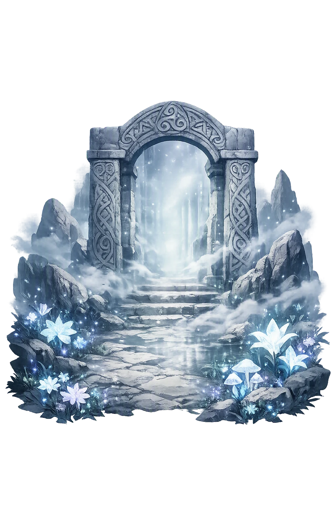
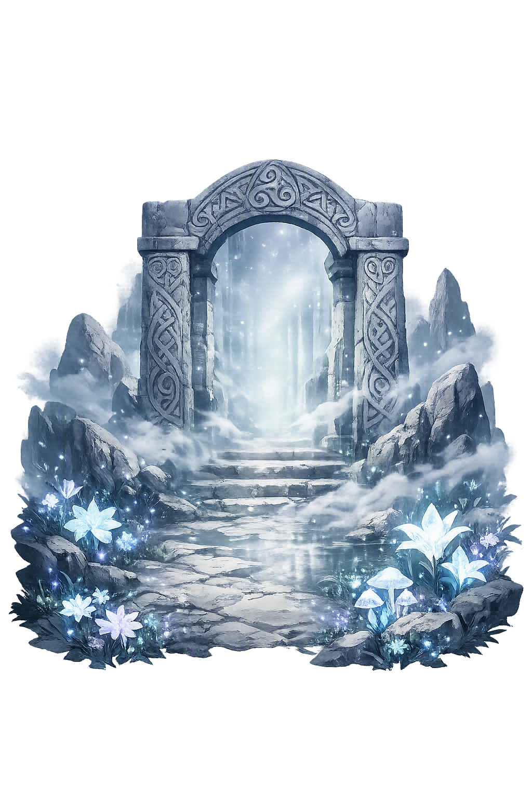

Unicode restoration and ASCII comparison
Annwn
The name survives in scholarly transliteration. Annwn is the standard Celtic romanisation, documented in academic sources — “The deep, the abyss”. Because the spelling uses only Latin letters, the form is the same in both ASCII and Unicode.
No indigenous writing system is securely attested for individual celtic names. The form shown is a modern scholarly transliteration.
annwn
The plain annwn form is identical to the Unicode restoration. Because this name is already written in Latin letters, no diacritics, stress, or script information were lost — only capitalization differs.
Annwn
The Unicode restoration does not need to recover lost marks for Annwn. Its value is canonical spelling and consistent cataloguing, not the reconstruction of erased orthography. The domain is readable as-is to both DNS and humanity.
Annwn.com → annwn.com
The non-ASCII characters in Annwn are encoded while the ASCII remains visible. To the DNS, it is Punycode. To humanity, it is Annwn.
How Annwn is preserved in writing
No indigenous writing system is securely attested for individual celtic names. The form shown is a modern scholarly transliteration.
Contribute scholarly provenance →Owned, ideal, and ASCII forms of Annwn
Annwn
The full Unicode restoration. annwn.com is not in the PuniCodex collection — it is watched for release; if it drops, this temple upgrades to an owned flagship.
How Annwn was spoken
The Deep, the Abyss — realm of the feast and the hunt
Annwn is the Welsh Otherworld of the Mabinogi and the oldest Welsh poetry — a realm of plenty where the feast never fails, ruled in the First Branch by [[arawn|Arawn]], and hunted across by Gwyn ap Nudd, whom God set over the demons of Annwn lest they destroy this world. Its cauldron, borne home from its fortresses at terrible cost, is the oldest quest of Arthurian tradition.
Kindled by the breath of nine maidens, rimmed with pearls, it will not boil a coward's food — the prize of Arthur's voyage in Preiddeu Annwfn.
Arawn's pack — gleaming white with red ears, the colours the Welsh tradition gives every creature from the Otherworld.
Arthur's ship on the voyage to the fortresses of Annwn — three full loads went in; except seven, none returned from Caer Sidi.
The son of Nudd rides with the hunt of Annwn; in Culhwch ac Olwen, God set him over its demons lest they destroy this world.
Stories of Annwn
Annwn is named in the very first pages of the Mabinogi and in the most difficult poem of early Welsh tradition. Its dossier is small and immense: a king who trades his shape, a cauldron that will not boil a coward's food, a hunt that keeps the world's demons leashed — and, behind all three, the deep itself.
Pwyll, prince of Dyfed, is hunting in Glyn Cuch when he drives a strange pack off a stag — hounds gleaming white, with red ears, the colours of the Otherworld — and feeds his own dogs on the kill. Their master rides up: [[arawn|Arawn]], a king of Annwn, and the offense is real. To make amends Pwyll accepts Arawn's bargain: for a year and a day they will exchange shapes and kingdoms, and at the year's end Pwyll must face Arawn's rival Hafgan — a king who can be killed by a single blow only; strike him twice and by the next day he fights as strongly as before.
Pwyll rules Annwn for the year in Arawn's likeness, in a court of unsurpassed plenty — and each night lies beside Arawn's queen without once touching her. At the appointed ford he strikes Hafgan once, refuses the second blow the wounded king begs for, and Annwn is united under Arawn. When the two kings meet again at Glyn Cuch and resume their own shapes, Arawn learns of the year's chastity and the friendship is sealed with gifts of horses, greyhounds, hawks, and gold. From that day Pwyll was called not Pwyll Prince of Dyfed but Pwyll Pen Annwn — Pwyll, Head of Annwn.
The poem Preiddeu Annwfn, 'The Spoils of Annwfn', preserved in the fourteenth-century Book of Taliesin and spoken in the poet's own voice, is the oldest surviving account of an Arthurian Otherworld raid. Arthur sails in his ship Prydwen against the fortresses of the deep — Caer Sidi, Caer Pedryfan, Caer Wydyr, and the rest — and the refrain tolls after each: 'except seven, none returned from Caer Sidi.' Three full loads of Prydwen went into Annwn; seven men came back.
The prize is the cauldron of the Head of Annwfn — kindled by the breath of nine maidens, its rim set about with pearls, and marked by the rule the Welsh tradition fixes on Otherworld vessels: it will not boil the food of a coward. The poem is elliptical, proud, and mournful at once — the poet stands apart from the swordsmen who went in and never came out — but its facts became permanent: the Otherworld has a cauldron, Arthur went to get it, and almost no one returned.
The great hunting catalogue of Culhwch ac Olwen names its most uncanny huntsman: Gwyn ap Nudd, son of Nudd — 'God has set him over the demons of Annwn, lest this world be destroyed.' The hunt of the boar Twrch Trwyth cannot be accomplished without him, and so Gwyn rides out of Annwn at Arthur's muster: the Otherworld's own power, conscripted to keep its worst inhabitants leashed.
The same tale gives Gwyn his famous quarrel. He had carried off Creiddylad, daughter of Lludd, from her father's house, and Gwythyr ap Greidawl raised a host and took her back; Arthur judged between them — the maiden to remain with her father, and the two to fight for her every May Day until the Day of Judgment, when the winner takes her for good. Gwyn's hunt is therefore not seasonal sport but a standing order: Annwn's violence rides out under a king who is himself a covenant.
The Welsh Life of St Collen gives Annwn its most local address. Collen, keeping his hermitage under Glastonbury Tor, hears two men say that Gwyn ap Nudd — king of Annwn and of the Tylwyth Teg, the Fair Folk — holds his court above. Collen answers that the hosts of the air are demons; a summons follows, and on the summit he finds a castle of the utmost splendour, the king on a golden chair, and a banquet of dishes he has never seen the like of.
Collen sprinkles his holy water over the food, and the whole vision dissolves — castle, court, and king gone as if they had never been, leaving the saint standing on the green Tor. The tale is late and Christian, but it keeps the old facts in place: Gwyn is king of Annwn, his hall is a feast beyond earthly measure, and the Otherworld can open on a hillside in Somerset and close again without a trace.
Annwn is the rare Otherworld whose name tells you where it is: an- + dwfn, the un-deep, the very deep — not a land over the sea or under a hill but the depth beneath the world, the place the surface world is the skin of. The tradition never pretends it is far away. Pwyll stumbles into it on an ordinary hunt by breaking an ordinary courtesy; it lies a year's shape-shift away, close enough for two kings to trade faces and governments across it.
Enter Extended Lore